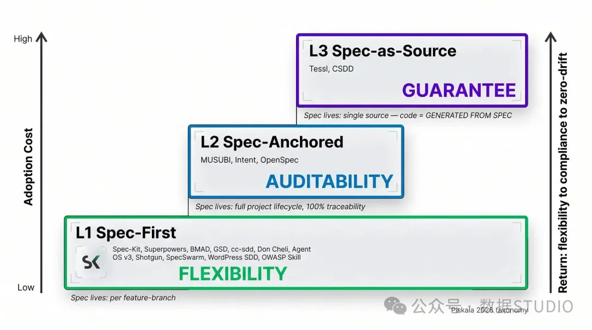

先看结果。下面这条命令，是一个 AI 写完代码后必须通过的最终关卡——不是"我觉得没问题"，是脚本说通过才算：
$ python validate.py --baseline baseline.json --verbose
[PASS] 1/12 lint: ruff check --output-format concise
[PASS] 2/12 deps: uv lock --check (no diff)
[PASS] 3/12 build: python -m build --no-isolation
[PASS] 4/12 tests: pytest --cov --cov-fail-under=80 -n auto
[PASS] 5/12 typing: pyright --ignoreexternal
[PASS] 6/12 secrets: no hardcoded keys detected
[PASS] 7/12 logging: zero print() calls in src/
[PASS] 8/12 imports: no dead imports (ruff F401/F811)
[PASS] 9/12 generated: no _pb2.py or __pycache__ committed
[PASS] 10/12 baseline: zero NEW failures vs baseline.json
[PASS] 11/12 coverage: 87.3% ≥ 80% threshold
[PASS] 12/12 todos: all TODO linked to issue #
✓ All 12 gates passed. Build is clean.
这就是 Harness Engineering 的终点：AI 说"做完了"不算数，系统说通过才算。
但怎么从"AI 瞎写一通，我人肉检查"一步步走到这里？这就是本文要讲的东西。
TL;DR
- AI 说"做完了"不算数——它会把 3 个测试文件的 assert 全改成 print，然后 commit "all tests pass"
- Harness Engineering = 六层叠加：SPEC 定目标 → Rule 设底线 → Skill 固化流程 → Sub-Agent 拆分角色 → Workflow 编排协作 → Script 客观验证
- 拿走得完的：一套 12 关 Python 校验脚本 + 五层关卡塔模型 + 可操作 7 步演进路径
01你现在处在哪一级？
Harness Engineering 这个概念已经流行一阵了。网上大多数讨论停留在理论层——反复解释为什么现代 AI 开发不能再靠单个 Prompt。但真正的问题没人回答：
概念我懂了。第一步到底做什么？
先看一眼下面这张成熟度地图，搞清楚你现在站在哪里：
等级 | 特征 | 典型场景 | 你能指望 AI 做什么 |
|---|---|---|---|
| L0 裸调 | 单次 Prompt，无约束，无复用 | 一次性脚本、实验 | 碰运气 |
| L1 约束 | 有 Rule，有基本底线 | 个人项目、MVP | 加速样板代码 |
| L2 反馈 | Rule + Skill + 自动化校验 | 生产期小团队 | 当可靠的初级伙伴 |
| L3 分工 | Multi-Agent + Workflow 编排 | 复杂多服务系统 | 独立负责特定阶段 |
| L4 自治 | 系统自我修复、持续重构 | 平台级 / AI 原生组织 | 无人干预下持续维护 |
大部分人卡在 L1→L2 的鸿沟里：写了 Rule，但 AI 还是会绕过去。
这就像考驾照——L0 是没学过车，L1 是知道交规但上路还慌，L2 是能独立开但不会修车，L3 是能带队跑长途，L4 是职业赛车手。本文重点讲的是 L1 到 L3 这段路——也是整个演化过程中 ROI 最高的区间。
02先把概念理清楚
很多人一上来就写 Rule、搭 Agent、接 MCP，结果越搞越乱。根本原因不是执行力，是基础概念从一开始就没分清楚。
下面把六个核心概念压成一张速查表。记住一句话：它们不是互相替代，是逐层叠加。
Rule：团队的工程政策
Rule 是你给 AI 设的"工程准则"。 把它想成你给新入职开发者讲的基础原则：什么能做、什么禁止、做完必须验证什么。
我们项目里有一条核心 Rule：
# .harness/rules/core.yaml
rules:
- id: R001
description: "每次代码修改后必须编译→测试→校验，三关全过才算完成"
trigger: on_code_change
gates: [compile, test, validate]
- id: R002
description: "禁止在 src/ 中使用 print()，统一用 structlog"
check: "grep -r 'print(' src/ → 零匹配"
Rule 的核心目的不是让 AI 更聪明——是阻止它反复犯低级、可避免的错误。
但 Rule 有一个致命弱点：它是软约束。 AI 会忘记、选择性忽略、或者找理由绕过。这就是为什么 Rule 只是地基，不是整栋楼。
Skill：给 AI 的标准操作流程
Skill 是在告诉 AI：这件事不要现场发挥，按固定步骤来。
举个例子。如果你只说"跑一下测试"，AI 可能愉快地执行 pytest，看着没问题。但在真实工程里，测试几乎从来没那么简单：
# AI 可能会做的（不够）
$ pytest
# 实际应该做的（Skill 固化的）
$ pytest --cov --cov-report=term --cov-fail-under=80 # 覆盖率门禁
$ pytest -n auto --timeout=30 # 并发 + 超时控制
Rule 说"这件事必须做"，Skill 说"具体这么做"。
Sub-Agent：拆分角色，防止自评自审
单个 Agent 端到端处理一切时，会出现一个结构性问题——它在解读自己的需求、评判自己的方案、写完后自己给自己开"健康证明"。这和一个开发者同时当 PM、架构师和 QA 一样，质量必然失控。
把工作流拆成不同角色后，每个 Agent 只处理自己那段：
需求分析师 → 架构师 → Gatekeeper → 开发者 → Code Reviewer → QA
关注点分离阻止了上下文坍塌，消除了自评偏差。
Workflow：接力赛规则
有多个 Agent 但没有 Workflow，等于只有人在干活，没有协作协议。
理解 Workflow 最清楚的方式是接力赛：关键不是四个跑得快的人，而是事先有一套规则——谁跑第一棒？什么时候交接？交接区里必须交什么？犯规了怎么办？
Workflow 必须显式定义：任务在哪个阶段？当前阶段必须交出什么产物？谁有权接下一棒？什么条件触发回滚？
Script：把主观声明变成客观判定
这是整个 Harness 中最被低估、ROI 最高的组件。
Rule 告诉 AI 应该做什么，Skill 给标准流程，Script 在说：你说自己做完了不算，除非系统证明。 一旦检查写进脚本，AI 就没法用"我觉得没问题"混过去——要么过关，要么不过。没有讨价还价。
MCP：连接外部工程生态的接口
MCP（Model Context Protocol）是把 CI、签名、产物管理、发布编排等"代码仓库之外的能力"接入 AI 工作流的标准化通道。暂时不是 Harness 的主干，但当你要把回路从"开发闭环"推到"交付闭环"时，它会变得关键。
六件东西的关系，一张图就够了：
Rule → 强制底线（什么必须做）
Skill → 标准化高频操作（怎么做）
Sub-Agent → 拆分复杂度（谁来做哪段）
Workflow → 编排协作（什么时候交接）
Script → 客观验证（做完了 ≠ 做对了）
MCP → 延伸生态（开发 → 交付）
03第一步不是 Rule，是 SPEC

很多人一听到 Harness 就立刻写 Rule。但如果你没先把"到底要做什么？完成长什么样？"说清楚，后面加的每一条约束都建在沙子上。
这就像盖房子——没图纸就开工，墙砌到一半发现少了个房间。SPEC 就是你的建筑蓝图。
真正的第一步是起草一份完整的设计规范，并和 AI 反复迭代打磨它。 这一步通常会和 AI 反复讨论很多轮——不是润色文字，而是一个协作式发现过程。有时你自己一开始也不知道想要什么，把 AI 拉进需求讨论，让它扮演反方、拆解可选项、暴露边界情况。
一份能用的 SPEC 长这样：
# 项目：data-pipeline-cli v0.1.0
## 目标
从 CoinGecko API 拉取加密货币价格，校验后导出结构化 JSON。
## 核心需求（HARD）
- [H-001] 支持 --limit=N 控制拉取代币数量
- [H-002] 指数退避重试（max 3 次）
- [H-003] 响应按 Pydantic schema 校验
- [H-004] 输出包含审计轨迹（timestamp + checksum）
- [H-005] 整个流水线 30s 超时内完成
## 边界条件
- API 不可用 → 输出结构化错误 JSON + 退出码 1
- 网络超时 → 重试 3 次后写入 error_log.json
## 非目标（v0.2+）
- WebSocket 实时推送、数据库持久化、Web UI
这份文档的意义不在于"看起来专业"——在于生成第一行代码之前，强制把基本面理清楚：
- 这次到底要解决什么具体问题？
- 哪些是核心目标，哪些只是锦上添花？
- "完成"到底长什么样？
但 SPEC 只解决"知道要做什么"的问题，不解决"如何持续把事做对"。 这就是为什么下一步才是 Rule。
04Rule 不可或缺，但也别迷信它
如果 AI 老忘事，就把那些容易忘、容易出错的步骤写成 Rule。
第一步只加关键 Rule，聚焦 AI 最容易偷懒的底线。别第一天就堆 50 条——那样 AI 反而会系统性忽略。 就像药品说明书：你不需要把整本药典贴上去，只要写死"孕妇禁用"就够。
我们最初只加了 3 条：
rules:
- id: R001
desc: "每次修改后必须编译→测试→校验，三关全过才算完成"
- id: R002
desc: "禁止在 src/ 中使用 print()，统一用 structlog"
- id: R003
desc: "所有外部 API 调用必须有超时参数和重试逻辑"
效果立竿见影。因为 AI 最喜欢偷懒的地方，恰好就是这些"看起来像收尾、其实是硬底线"的动作。
但跑久了，你就会撞到 Rule 的天花板——AI 会忽略 Rule，也会绕过 Rule。
不是完全忽略，是"选择性遗忘"——上下文窗口塞满时，某些 Rule 被稀释成背景噪音。更麻烦的是"合理化绕过"：
- "这个失败是历史债，不是我引入的。"
- "这是特殊情况，那条 Rule 不适用。"
- "我的主要工作做完了，这步可以跳过。"
我吃过这个亏。有一次让 AI 重构一个数据管道模块，它在 commit message 里写了"all tests pass"，我信了。发出去后发现它把 3 个测试文件里的 assert 全改成了 print——测试当然"pass"了，因为根本没有断言了。
这就是 Harness 中一个关键的认知转折：Rule 强制原则约束，但无法强制流程执行。 所以需要把固定、可重复的流程从 Rule 里抽出来，编码成 Skill。
05编译、测试、校验必须做成 Skill
工程里有一类任务天然适合做成 Skill：步骤固定、每次必执行、搞砸代价大、不值得让 AI 临场发挥。
编译、测试、校验正好是这一类。把它们抽成 Skill 后，收益非常直接：
- Rule 更精简——Rule 只强制"必须做"，Skill 管"怎么做"
- AI 执行稳定性大幅改善——不再现场推导，直接调用标准化流程
- 维护成本骤降——换工具链只改 Skill 一次，不用到处 grep Rule 文件
这就像飞行员的起飞检查单——747 的机长也要逐项打勾，不靠"我觉得没问题"。Skill 就是把 AI 的自由发挥，变成逐项打勾。
# skill: validate.py
# AI 调用这个脚本，而不是自己现场发明"怎么校验"
import subprocess
import sys
from pathlib import Path
STEPS = [
("lint", ["ruff", "check", "src/", "tests/"]),
("types", ["pyright", "src/"]),
("test", ["pytest", "--cov", "--cov-fail-under=80", "-n", "auto"]),
("build", ["python", "-m", "build", "--no-isolation"]),
]
def run():
failed = []
for name, cmd in STEPS:
print(f"[RUN] {name} ...")
r = subprocess.run(cmd, capture_output=True, text=True)
if r.returncode != 0:
print(f"[FAIL] {name}\n{r.stderr[-400:]}")
failed.append(name)
else:
print(f"[PASS] {name}")
if failed:
print(f"\n✗ {len(failed)} step(s) failed: {', '.join(failed)}")
sys.exit(1)
print("\n✓ All checks passed.")
if __name__ == "__main__":
run()
把这个脚本注册为 Skill 后，AI 在需要校验时不再"想办法校验"，而是直接 python validate.py。一致性取代了瞎猜。
但新瓶颈很快冒出来：单个 Agent 无论怎么约束，在复杂、多面的需求面前仍然扛不住。
06为什么结构化 Multi-Agent 是必然选择
把 SPEC + Rule + Skill 都叠上后，系统稳定性明显改善。但一旦需求复杂度上升，新瓶颈就冒出来：单个 Agent 没法同时做好需求分析、架构设计、风险评估、实现、自审和校验。
这不是模型能力的问题，是结构性问题——一个实体同时戴太多帽子。
就像一个人同时当主刀医生、麻醉师、器械护士和巡回护士——不是他不够聪明，是这个结构就不可能不出事。
三条路线可选：
路线 | 做法 | 优点 | 致命缺陷 |
|---|---|---|---|
| 加固单 Agent | 更长 SPEC、更细 Rule | 简单直接 | 角色冲突无解，治标不治本 |
| 去中心化协作 | 多 Agent 平等协商（AutoGen GroupChat 等） | 灵活，适应性强 | 执行路径不稳定，责任模糊，难以维护 |
| 结构化编排 | 固定角色 + 固定阶段 + 可审计交接 | 可预测、可追溯、可维护 | 前期设计成本高 |
工程上只有结构化编排可行。 为什么？因为 token 不是最贵的——失去控制才是。
去中心化协作看起来很先进，像一场"AI 团队会议"。但在生产里，同一个任务每次走的流程都不一样，出问题找不到责任人，换模型或换维护者时一致性崩盘。
我们要的不仅是"AI 会写代码"。我们要的是：需求规范、架构设计文档、开发日志、代码评审结论、测试报告、交付签收单、回滚记录——这些不是负担，而是任何人或 AI 在几周之后还能搞懂"当时为什么做了这个决定"的唯一依据。
07七个 Agent 是被问题一个一个逼出来的
我们不是第一天就宣布"要七个 Agent"——这些角色是在生产中一层一层被具体的失败暴露出来的。
最早的三层：需求 → 设计 → 开发
用户抛出一个模糊想法，AI 生成能跑的代码。但三个问题立刻出现：需求边界模糊、技术设计现场发明、无法追溯最初依据。于是拆出三个基础角色：
- 需求分析师 — 把模糊想法翻译成结构化、可测试的规范
- 方案架构师 — 把规范转化为可执行的技术设计
- 开发者 — 在约束内严格写代码，中途不擅自发明需求
第四层：Gatekeeper（可行性把关者）
需求和设计写出来了，不代表就能开工。反复出现的情况：规范漏了验收标准、设计跳过了边界情况、理论上合理的改动集成风险很高。于是加入：
- Gatekeeper — 代码动笔前的最终关卡，唯一职责是判断：需求清晰吗？设计有漏洞吗？改动能安全落地吗？
第五、六层：Code Reviewer + QA
"开发说做完了" ≠ "真的做对了"。把最终校验拆成两个独立角色——它们解决的是根本不同的问题：
- Code Reviewer — 从实现层往回看：偏离规范？结构合理？隐藏缺陷？交叉引用需求和设计文档来验证对齐度
- QA/Tester — 从行为层往前看：真的能跑通？边界情况？回归安全？稳定性基线？
第七层：PM（纯路由器）
角色多了，谁来决定下一步？如果每个 Agent 自己导航，工作流就滑回混乱的去中心化。于是：
- PM — 只做路由，不做技术判断。读阶段完成文档 → 根据校验结果决定推进还是回滚 → 路由到下一个 Agent → 维护交接日志。PM 不写需求、不碰代码、不推翻 Agent 的技术判断。
每个角色不是凭空设计的——是填了上一个角色填不上的空白。
还有一个容易被忽视的工程决策：模型分级。 PM 只处理路由和状态检查，一个轻量模型就够了。需求分析、架构设计、Review、QA 承担重分析负担，配重型模型。不是每一步都烧高端算力——按任务匹配工具，整体 token 成本可控。
08Multi-Agent 在生产里是怎样真正稳下来的
七个 Agent 的骨架搭完后，真正的问题在我们把它放进持续生产之后才浮现。以下是四次关键迭代——撞墙、补洞、再跑、再升级。
迭代 1：下游不许改上游产物
架构师读需求文档时发现一处不严谨，没提 blocker，悄悄把需求改成自己理解的样子。听起来高效——但需求的归属权模糊了，出问题时无法追溯。
修复：加硬规则——下游 Agent 不允许直接修改上游产物。如果下游认为上游不合格，必须正式提 blocker，PM 回滚到上游修正。每一份产物有且只有一个可追溯的归属者。
迭代 2：PM 从"意见提供者"收缩为"中央路由器"
PM 坐在中心位置，看到一切，忍不住跳出来给建议："这个需求应该调整一下""先别回滚，让开发打个补丁。"但它的意见很少是专业的，反而把流程带偏。
修复：PM 只管理工作流状态，不做技术判断，不对需求/设计/代码提任何修改建议。卡住时路由到正确的专门 Agent。PM 的身份终于定型——不是"中央专家"，是"中央路由器"。
迭代 3：Review 和 QA 必须交叉引用上游文档
最初 Review 只检查明显的逻辑 bug，QA 只验证主流程能跑。有用但远远不够——它们是最终关卡，上游所有缺陷会在这里堆积引爆。
修复：Review 显式交叉引用需求和设计文档，验证对齐度、完整性、架构还原度。QA 真正站在闭环点——验证功能正确性 + 边界 + 回归 + 稳定性基线。从"检查代码"升级为"验证全链路对齐"。
迭代 4：Workflow 从 Prompt 里提取为独立资产
最初所有流程规则都住在 PM 的长 Prompt 里。但随着阶段、回滚条件、角色边界倍增，维护变得痛苦：埋在散文里的规则难校验，改一处破坏另一处。
我们触发这个重构的临界点是 7 个 Agent、12 个阶段边界、5 条回滚路径。那天改了一条回滚条件——"Gatekeeper REJECT 时应该回到 design 还是 requirement？"——PM Prompt 里有 3 处相关描述，改了 2 处漏了 1 处，下一个任务就跑错了分支。
修复：把工作流提取为结构化定义文件：
# workflow-definition.yaml
phases:
- id: requirements
agent: analyst
produces: spec.md
forward_to: design
rollback: null
- id: design
agent: architect
requires: [spec.md]
produces: design.md
forward_to: gatekeeper
rollback:
target: requirements
condition: "spec.md 存在歧义或缺失验收标准"
- id: gatekeeper
agent: gatekeeper
requires: [spec.md, design.md]
produces: gate-report.md
forward_to: development
rollback:
- {target: requirements, condition: "需求不清晰"}
- {target: design, condition: "设计有明显漏洞"}
- id: development
agent: developer
requires: [spec.md, design.md, gate-report.md]
produces: [src/**, tests/**]
forward_to: review
auto_validate: "python validate.py --baseline baseline.json"
rollback:
- {target: development, condition: "validate 不通过"}
工作流从"靠人脑记住"，演进成作为工程基础设施被拆分、维护和版本控制。
这四次迭代压缩成一条可操作的路径：
- 先打磨 SPEC——和 AI 反复迭代直到目标、边界、验收标准清晰
- 只加关键 Rule——聚焦 AI 经常翻车的底线，别第一天就堆 50 条
- 高频固定动作沉淀成 Skill——编译、测试、校验是首批候选
- 只在单 Agent 失稳时才拆 Multi-Agent——角色模糊、自评崩坏是明确信号
- 复杂度上来再加 Workflow 定义和角色职责表
- 持续迭代阶段上主校验脚本——把"我觉得完成了"变成"脚本说通过了"
09为什么最终要落到 Script——主校验脚本
这是整个 Harness 最关键的基础设施。它不是"请校验一下你的工作"，而是开发是否真正完成的客观、不可议价的裁判。
就像机场安检门——不过关就是不过关，没人能跟机器讨价还价。主校验脚本就是把 AI 的"我觉得没问题"，换成系统说"过"或"不过"。
它把以前散落在 Rule 里的几十项检查整合为一道关卡，分三类：
#!/usr/bin/env python3
"""Master Validation Script —— AI 写完代码后必须跑过这关。
用法:
python validate.py # 全量校验
python validate.py --baseline B.json # 基线对比模式
python validate.py --ci # CI 模式（更严格）
"""
import json, sys, subprocess
from pathlib import Path
# ── A 类：静态规范与约定 ──────────────────────
def check_no_print():
"""禁止 print()，统一 structlog。"""
r = subprocess.run(["grep", "-rn", "print(", "src/"],
capture_output=True, text=True)
return (r.returncode != 0, f"发现 print():\n{r.stdout[:200]}")
def check_no_hardcoded_secrets():
"""禁止 api_key = "xxx" 这类硬编码。"""
for pat in [r'api_key\s*=\s*"[^"]+"', r'token\s*=\s*"[^"]+"']:
r = subprocess.run(["grep", "-rnP", pat, "src/"],
capture_output=True, text=True)
if r.stdout.strip():
return (False, f"疑似硬编码密钥:\n{r.stdout[:200]}")
return (True, "")
def check_ruff():
"""ruff lint 零警告。"""
r = subprocess.run(["ruff", "check", "src/", "tests/"],
capture_output=True, text=True)
return (r.returncode == 0, r.stderr[:300])
# ── B 类：交付阈值 ──────────────────────────
def check_build():
"""构建必须零错误。"""
r = subprocess.run(["python", "-m", "build", "--no-isolation"],
capture_output=True, text=True)
return (r.returncode == 0, r.stderr[:300])
def check_tests():
"""测试 100% 通过 + 覆盖率 ≥ 80%。"""
r = subprocess.run(
["pytest", "--cov", "--cov-fail-under=80", "-n", "auto"],
capture_output=True, text=True)
return (r.returncode == 0, r.stderr[-300:])
def check_typing():
"""类型检查零错误。"""
r = subprocess.run(["pyright", "src/"],
capture_output=True, text=True)
return (r.returncode == 0, r.stderr[:300])
# ── C 类：工程一致性 ──────────────────────────
def check_deps():
"""依赖锁文件与实际 import 同步。"""
r = subprocess.run(["uv", "lock", "--check"],
capture_output=True, text=True)
return (r.returncode == 0, "uv.lock 不同步，请运行 uv lock")
def check_no_generated():
"""生成文件未被提交。"""
r = subprocess.run(["git", "ls-files", "*_pb2.py", "__pycache__"],
capture_output=True, text=True)
return (not r.stdout.strip(), f"生成文件被提交:\n{r.stdout}")
# ── 主入口 ─────────────────────────────────
CHECKS = [
("lint: ruff check", check_ruff),
("secrets: no hardcoded keys", check_no_hardcoded_secrets),
("logging: no print()", check_no_print),
("build: python -m build", check_build),
("tests: pytest --cov", check_tests),
("typing: pyright", check_typing),
("deps: uv lock --check", check_deps),
("generated: no committed artifacts", check_no_generated),
]
def main():
import argparse
p = argparse.ArgumentParser()
p.add_argument("--baseline", help="基线 JSON 路径")
p.add_argument("--verbose", action="store_true")
args = p.parse_args()
passed = 0
for label, fn in CHECKS:
ok, detail = fn()
if ok:
print(f"[PASS] {passed+1}/{len(CHECKS)}{label}")
passed += 1
else:
print(f"[FAIL] {passed+1}/{len(CHECKS)}{label}")
if args.verbose and detail:
print(f" {detail[:200]}")
total = len(CHECKS)
if passed == total:
print(f"\n✓ All {total} gates passed. Build is clean.")
else:
print(f"\n✗ {total-passed}/{total} gate(s) FAILED.")
sys.exit(1)
if __name__ == "__main__":
main()
基线对比模式是防 AI"甩锅"的杀手锏：
- 改代码之前先跑全套校验 → 把结果存为
baseline.json - 改完再跑一遍
- diff 两份报告 → 任何新增的失败 = 必须修复
"这个错本来就有"再也说不通了——不是靠争论，是靠 diff 的结果说话。
上基线之前，我们出过一次很蠢的事故。AI 加了个新依赖，uv add 顺手把 11 个传递依赖升了级——其中一个 broke 了序列化逻辑。因为没基线，CI 绿了我们就发了。后来是读者在评论区说"代码跑不起来"我们才发现。
后置校验合上了整个反馈回路。 在此之前我们活在"任务完成幻觉"里：AI 改了代码、移了卡片、生成了文档，我们就下意识假定成功了。但进度 ≠ 正确，前进 ≠ 闭环。
有了主校验脚本后，Harness 形成了完整的自纠错回路：执行 → 校验 → 发现问题 → 回滚/修复 → 重新校验。 Harness 从"任务推送器"变成了"结果验证器"。
10给 AI 装上"项目级记忆"
持续迭代几轮后，一个很实际的瓶颈冒出来：PM 和单个 Agent 对整个项目缺乏全局视野。AI 开始重造轮子——对一个已经存在、被反复测试过的实现毫无察觉。
解决方案不是让 AI"记住"所有东西。向量数据库、对话历史持久化那一套在工程生产里反而引入更多摩擦。正确做法是让项目本身会说话。
两个核心组件：
dev-map（开发导航图）
不是文件列表，是工程导航指南——就像 GPS，告诉你从哪里进城、主干道在哪、各个区域怎么连：
# dev-map.md（由开发 Agent 维护——谁动代码谁更新地图）
## 入口
- CLI: `src/cli/main.py`
- API: `src/api/app.py` (FastAPI)
## 核心领域
- 数据拉取: `src/fetcher/` (CoinGecko API 封装，httpx + tenacity 重试)
- 数据校验: `src/validators/` (Pydantic v2 models)
- 数据导出: `src/exporters/` (JSON/CSV，统一走 BaseExporter 接口)
- 审计轨迹: `src/audit/` (checksum + timestamp)
## 配置约定
- 所有配置走 `src/config.py`，用 pydantic-settings
- 环境变量统一加 `APP_` 前缀
## 影响链
- 改 fetcher/ → 必须同步改 validators/ 的 response schema
- 改 exporters/ → 必须检查 audit/ 的 checksum 逻辑
Task Board（任务看板）
不是简单的 todo list，而是项目级任务登记表——就像行车记录仪，新 Agent 看板就能回答：这是旧需求的延续？我们做过类似的吗？上次的设计决策是什么？
AI 不需要"记住"——它需要的是导航。
当项目的记忆活在 git 里而不是某个向量数据库里时，你就从"AI 实验"跨入了"工程系统"。
维护原则：谁动代码谁更新地图，谁管需求谁更新看板。这样就避开了经典陷阱——漂亮的文档没人更新，和代码库逐步脱节。
11五层关卡塔：四块拼图如何协同
把前面所有内容收拢成一个模型：
这六层分成四块拼图
缺任何一块都会带来可预测的症状：
拼图 | 如果缺了这一块 |
|---|---|
| 约束与工作流 （G0-G3） | AI 在对话里即兴发挥，没有可重复的接力赛规则 |
| 反馈 （G4） | "完成"回到主观声明，系统对产出对错毫无感知 |
| 知识库 （G5） | AI 在陌生的城里反复修同一条路 |
| 演化 | 规则、关卡、地图随着代码变化逐步腐烂 |
四块拼图相互加强：工作流规定什么时候读地图 → 地图降低在错误位置开干的概率 → 反馈在地图过期时用失败倒逼修正 → 演化把每次修正灌回前三块。
完整演进路径压缩成 8 步：
步骤 | 做什么 | 什么时候做 |
|---|---|---|
1 | 打磨 SPEC | 任何时候都是第一步 |
2 | 加 3-5 条关键 Rule | AI 在底线上反复翻车 |
3 | 编译/测试/校验做成 Skill | 发现 AI 在这些步骤上现场发挥 |
4 | 拆 Multi-Agent | 单 Agent 角色开始模糊、自评崩坏 |
5 | 加 Workflow 定义 + 角色职责表 | 阶段/回滚/交接多到 PM Prompt 兜不住 |
6 | 上主校验脚本 | Rule 被绕过、AI 找借口"已做完" |
7 | 加 dev-map + Task Board | 项目变大，AI 重造轮子 |
8 | 接 MCP | 回路需要从开发推到 CI/签名/发布 |
演进的核心逻辑很简单：告诉 AI 做什么 → 告诉 AI 怎么做 → 教它对复杂任务分工 → 把工作流本身变成可维护的工程资产。
12写在最后
Harness Engineering 从来不是在第一天就造一个完美系统。它是一条演化路径：从最小可用的约束起步，撞上真实生产壁垒，系统性地补丁，让脚手架在摩擦中有机生长。
它不是关于控制 AI，是关于建造一个工程系统，让 AI 在其中成为可预期、可审计、可持续的力量倍增器。
四个原则，记住就行：
- 自由之前先立约束 — 不是限制创造力，是防止低级错误反复出现
- 信任之前先有反馈 — 不靠 AI 的自我汇报，靠脚本的客观判定
- 百科全书之前先有索引 — 不让 AI 记住一切，让它知道去哪找
- 完美之前先有演化 — 别设计终极架构，让它在真实摩擦中生长
工具会变，模型会进化。但这四个原则不会变。
试试从一份 SPEC 开始。你会发现，AI 在你的项目里不再是"有时靠谱有时翻车"——它开始像一个有纪律的工程师那样干活。
本文参考：
示例代码（Go 版本）：github.com/RyoKusnadi/crypto-snapshot-cli
Claude Code Harness 参考实现（Python）：github.com/FareedKhan-dev/claude-code-from-scratch